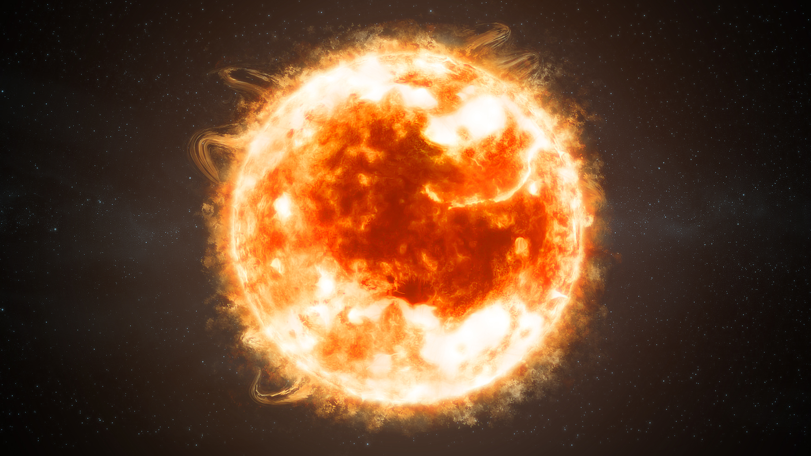
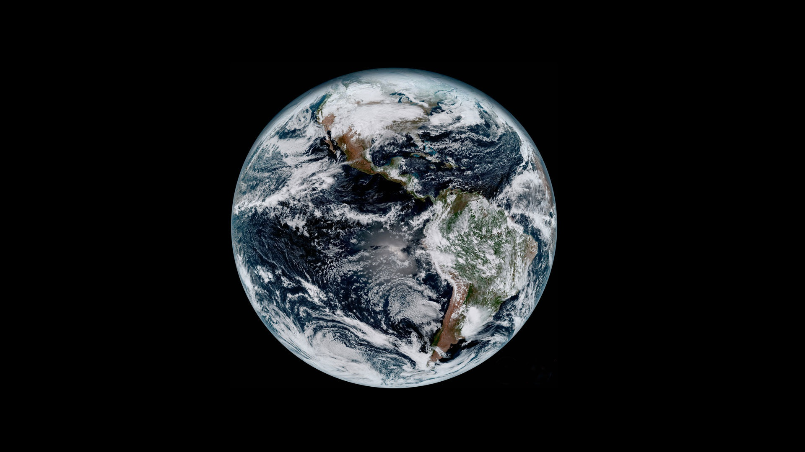
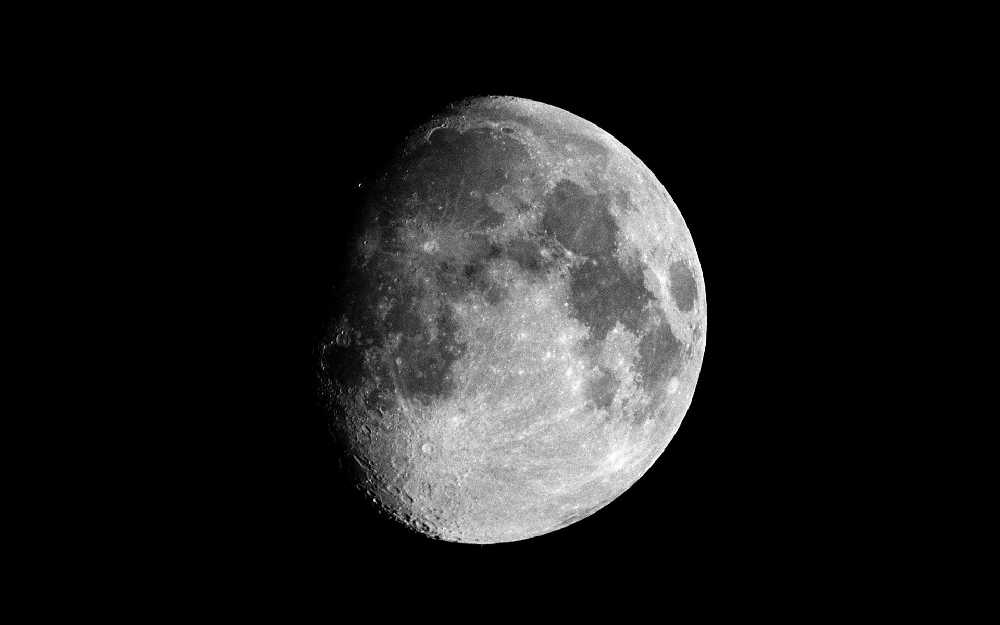

THE SOLAR SYSTEM
The Solar System is made up of all the planets that orbit our Sun. In addition to planets, the Solar System also consists of moons, comets, asteroids, minor planets, dust and gas.The inner solar system contains the Sun, Mercury, Venus, Earth and Mars. ... Everything in the Solar System orbits or revolves around the Sun.
THE SUN
The Sun is a yellow dwarf star, a hot ball of glowing gases at the heart of our solar system. Its gravity holds the solar system together, keeping everything – from the biggest planets to the smallest particles of debris – in its orbit. The connection and interactions between the Sun and Earth drive the seasons, ocean currents, weather, climate, radiation belts and auroras. Though it is special to us, there are billions of stars like our Sun scattered across the Milky Way galaxy. The Sun has many names in many cultures. The Latin word for Sun is “sol,” which is the main adjective for all things Sun-related: solar.
THE EARTH
Our home planet Earth is a rocky, terrestrial planet. It has a solid and active surface with mountains, valleys, canyons, plains and so much more. Earth is special because it is an ocean planet. Water covers 70 percent of Earth's surface. Earth's atmosphere is made mostly of nitrogen and has plenty of oxygen for us to breathe. The atmosphere also protects us from incoming meteoroids, most of which break up before they can hit the surface.
THE MOON
Earth's Moon is the only place beyond Earth where humans have set foot. The Latest 10 Things to Expect in Planetary Science for 2021 The brightest and largest object in our night sky, the Moon makes Earth a more livable planet by moderating our home planet's wobble on its axis, leading to a relatively stable climate. It also causes tides, creating a rhythm that has guided humans for thousands of years. The Moon was likely formed after a Mars-sized body collided with Earth. Earth's Moon is the fifth largest of the 190+ moons orbiting planets in our solar system. Earth's only natural satellite is simply called "the Moon" because people didn't know other moons existed until Galileo Galilei discovered four moons orbiting Jupiter in 1610.